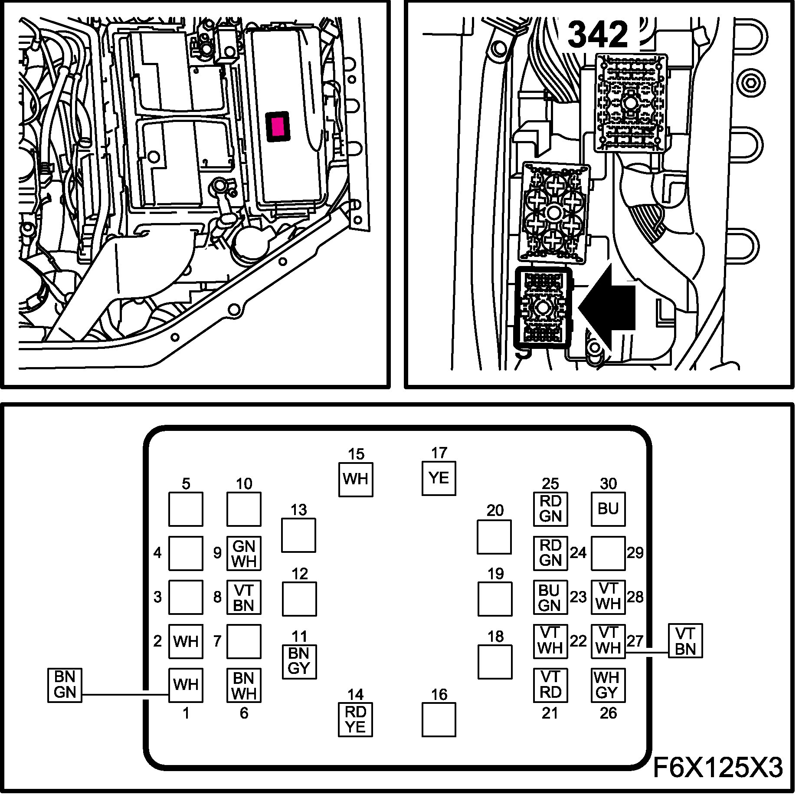
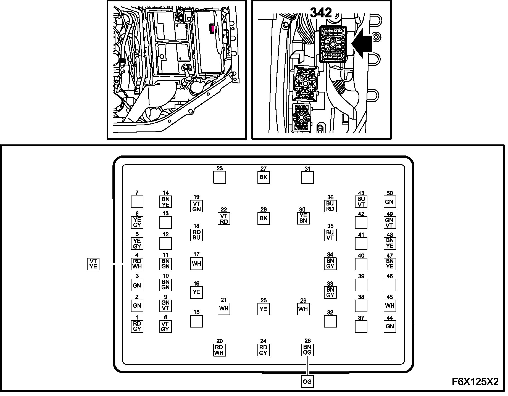
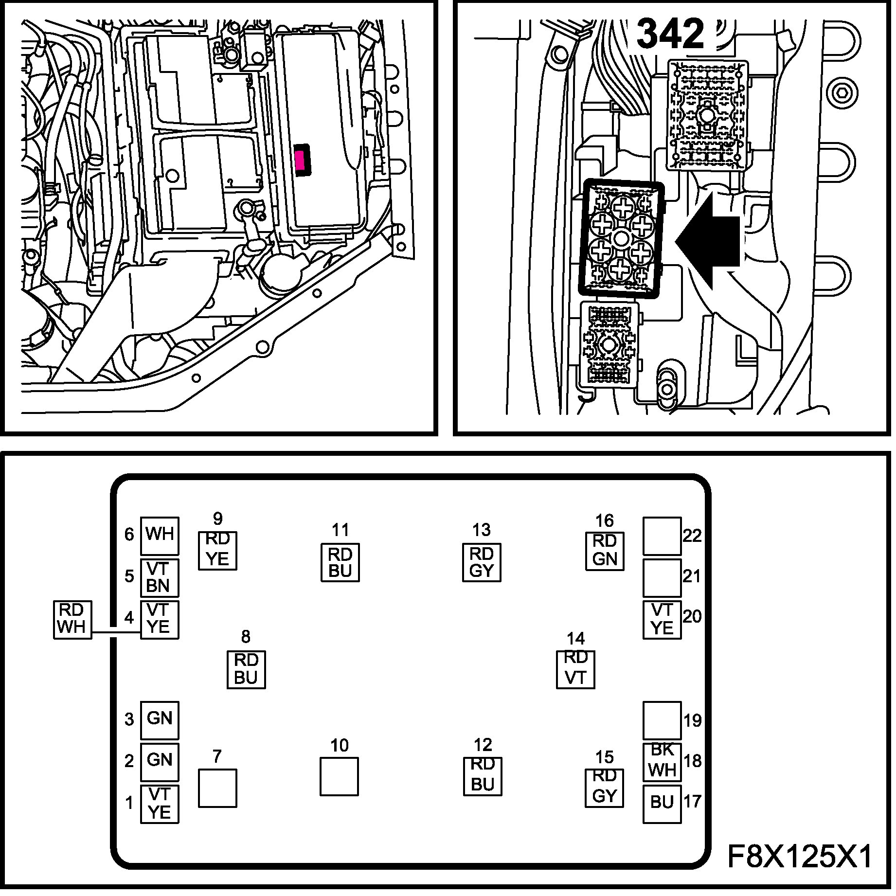
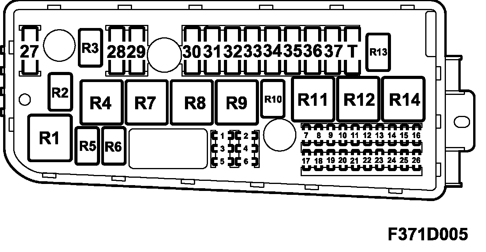
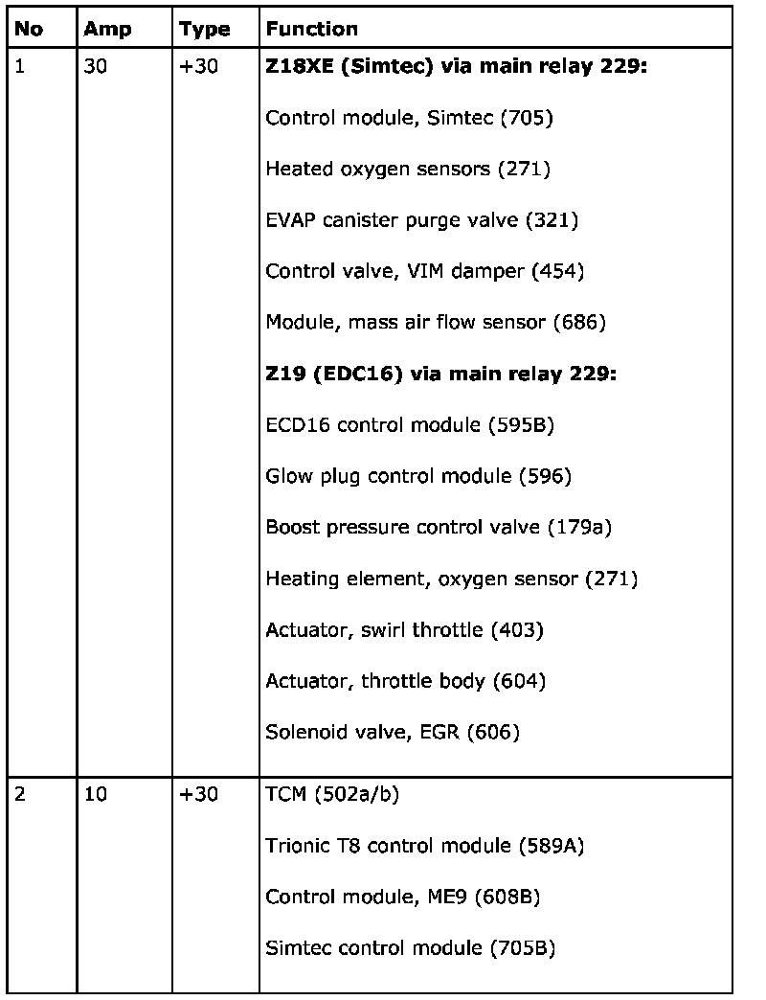
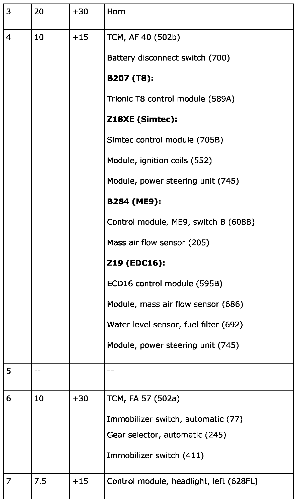
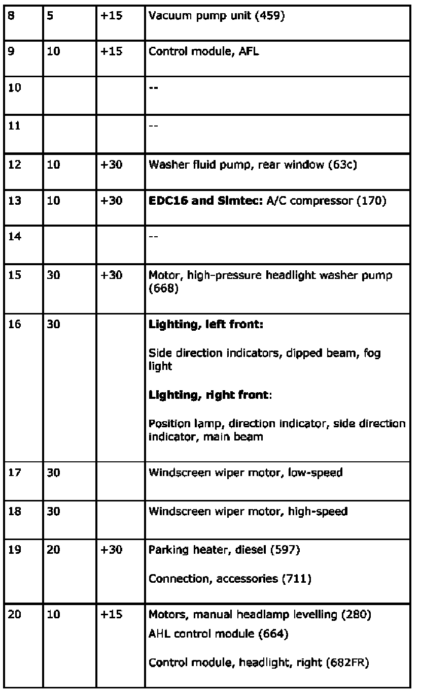
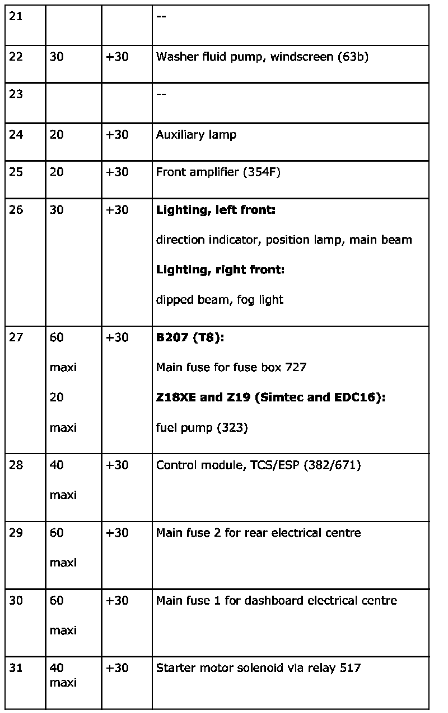
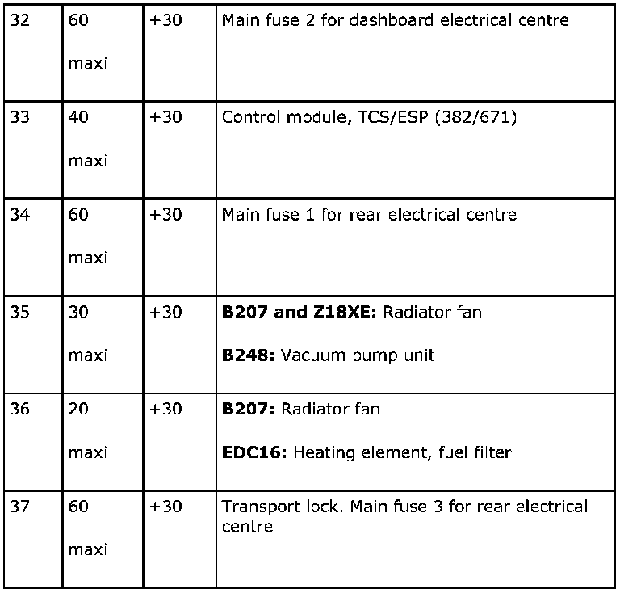
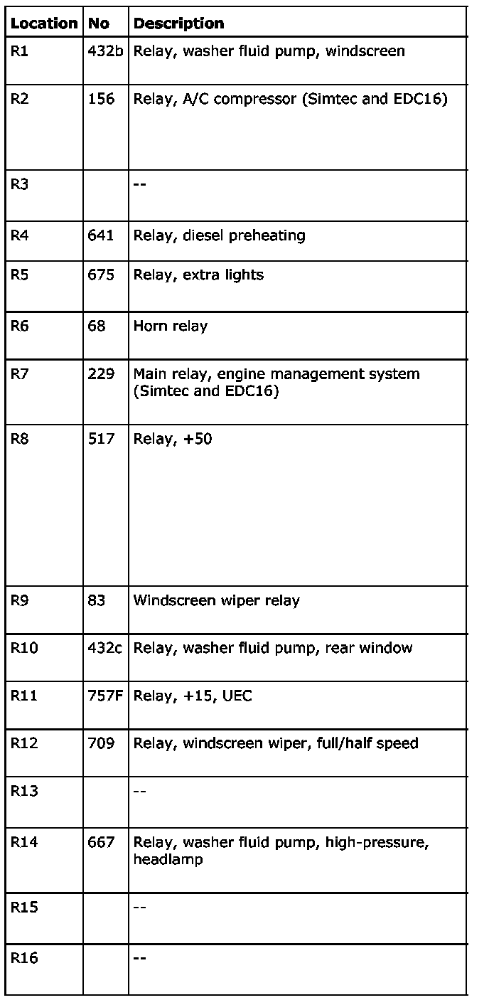

Engine Bay Electrical Centre 342 (UEC)
Engine Bay Electrical Centre 342 (UEC)
Location
The electrical centre is located between the battery and the left front wing.
Main task
Act as the electrical centre for the front of the car and handle some parts of the logic for the front lighting as well as the visibility and signal systems.
Distributes current from the battery to the other electrical centres.
The electrical centre contains the transport fuse (fuse 37).
Type
Electrical centre with relays, maxi and micro-fuses and integrated control module for logic operations.
Connect
The fuse box is connected to the battery and to grounding points G30A, G31 and G33S. The electrical centre is connected via three switches in its base to the engine harness, front harness and main wiring harness.
Power supply circuit for +30
Power supply circuit for +15
The engine harness is connected via switch M

The front harness is connected via switch F

The main wiring harness is connected via switch B

Fuses
Fuses:

The electrical centre can contain a greater number of fuses than those listed below. In such cases, these are not connected to a wiring harness.
Part 1:

Part 2:

Part 3:

Part 4:

Part 5:

Relays
The electrical centre can contain a greater number of relays than those listed below. In such cases, these are not connected to a wiring harness.
